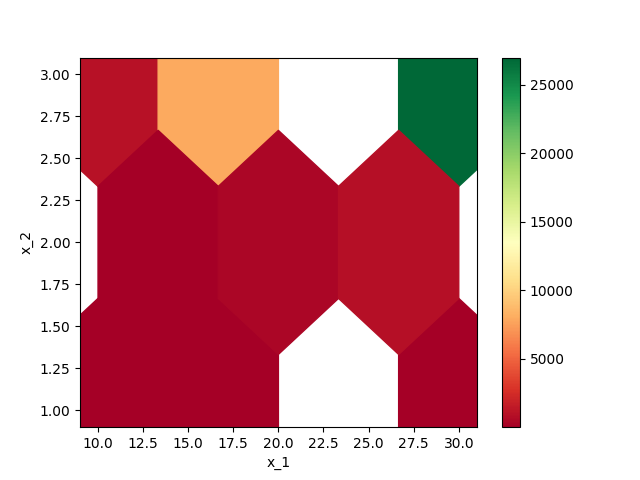
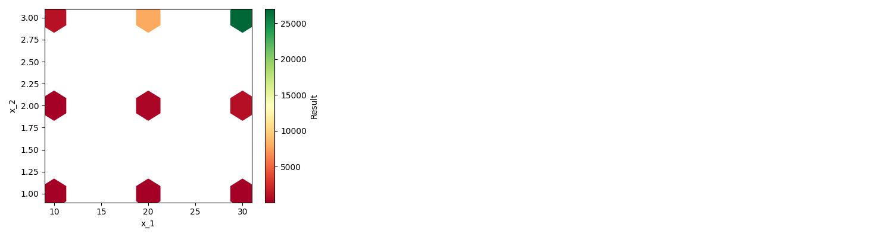

Note
Click here to download the full example code or to run this example in your browser via Binder
Sensitivity Analysis in Python¶
This guide is organized in the following sections:
**The Easy Way (use ``sensitivity`)** <#Using-The-Sensitivity-Library>`__
What is Sensitivity Analysis?¶
Sensitivity Analysis is the process of passing different inputs to a model to see how the outputs change. It differs from Monte Carlo Simulation in that no probability distributions are assigned to the inputs, and typically larger ranges of the inputs are chosen. The purpose of Sensitivity Analysis is to understand how the outputs change over the full range of possible inputs. Sensitivity Analysis does not derive any expected outcome or a probability distribution of outcomes, instead returning a range of possible output values associated with each set of inputs.
The general process for Sensitivity Analysis is as follows:
For the model given by:
Where:
\(y\): Model output
\(X\): Model input matrix
\(x_i\) Value if \(i\)th \(x\) variable
Follow the following steps:
Choose a set of values for each \(x_i\)
Take the cartesian product of these values as \([X_1, X_2, ..., X_m]\)
For each \(X_i\), calculate \(y_i = f(X_i)\)
Store the values of \(X_i\) mapped to \(y_i\)
Visualize \(y_i\) versus \(X_i\)
How to Do Sensitivity Analysis in Python?¶
Abstract algorithms are great, but let’s see the code that can make this happen. First we’ll import pandas to use later and define a function which represents the model:
import pandas as pd
def my_model(x_1, x_2):
"""
Represents f from above
"""
return x_1 ** x_2
We can run this model once to get a single result:
Out:
16
Now let’s go step by step through the above algorithm. First let’s choose a set of values for each \(x_i\):
While we can use itertools.product to take a cartesian product of an
arbitrary number of inputs, a more straightforward approach is to use
nested for loops. A for loop within a for loop will run with each
combination of the inputs.
Out:
10 1
10 2
10 3
20 1
20 2
20 3
30 1
30 2
30 3
Now we have each \(X_i\), we need to calculate \(y_i = f(X_i)\):
Out:
10
100
1000
20
400
8000
30
900
27000
Now store the values of \(X_i\) mapped to \(y_i\):
Out:
[(10, 1, 10), (10, 2, 100), (10, 3, 1000), (20, 1, 20), (20, 2, 400), (20, 3, 8000), (30, 1, 30), (30, 2, 900), (30, 3, 27000)]
Now the last is to visualize the result. We can do this with a table
format through a DataFrame:
df = pd.DataFrame(outputs, columns=['x_1', 'x_2', 'y'])
df
| x_1 | x_2 | y | |
|---|---|---|---|
| 0 | 10 | 1 | 10 |
| 1 | 10 | 2 | 100 |
| 2 | 10 | 3 | 1000 |
| 3 | 20 | 1 | 20 |
| 4 | 20 | 2 | 400 |
| 5 | 20 | 3 | 8000 |
| 6 | 30 | 1 | 30 |
| 7 | 30 | 2 | 900 |
| 8 | 30 | 3 | 27000 |
We can add some styling to the DataFrame to highlight the high and low values:
df.style.background_gradient(subset='y', cmap='RdYlGn')
| x_1 | x_2 | y | |
|---|---|---|---|
| 0 | 10 | 1 | 10 |
| 1 | 10 | 2 | 100 |
| 2 | 10 | 3 | 1000 |
| 3 | 20 | 1 | 20 |
| 4 | 20 | 2 | 400 |
| 5 | 20 | 3 | 8000 |
| 6 | 30 | 1 | 30 |
| 7 | 30 | 2 | 900 |
| 8 | 30 | 3 | 27000 |
We can plot the result as well with a hex-bin plot.
Out:
<matplotlib.axes._subplots.AxesSubplot object at 0x7fbef3acc050>
Using The Sensitivity Library¶
The sensitivity package is designed around making this whole process
easier. It is also able to handle more than two varying inputs with
ease. The basic usage is to construct a dictionary where the keys are
the names of inputs in a function and values are iterables of the values
for that input. Then this dictionary is passed to
SensitivityAnalyzer along with the function. The rest is handled for
you.
from sensitivity import SensitivityAnalyzer
sensitivity_dict = {
'x_1': [10, 20, 30],
'x_2': [1, 2, 3]
}
sa = SensitivityAnalyzer(sensitivity_dict, my_model)
Now that we have created the SensitivityAnalyzer object, it has
finished the sensitivity analysis. We can view a DataFrame with the
results at .df:
sa.df
| x_1 | x_2 | Result | |
|---|---|---|---|
| 0 | 10 | 1 | 10 |
| 1 | 10 | 2 | 100 |
| 2 | 10 | 3 | 1000 |
| 3 | 20 | 1 | 20 |
| 4 | 20 | 2 | 400 |
| 5 | 20 | 3 | 8000 |
| 6 | 30 | 1 | 30 |
| 7 | 30 | 2 | 900 |
| 8 | 30 | 3 | 27000 |
We can also get the hex-bin plot and styled DataFrame:
Out:
<IPython.core.display.HTML object>
<IPython.core.display.HTML object>
When creating the SensitivityAnalyzer object, you can pass other
options for formatting the outputs:
sa = SensitivityAnalyzer(sensitivity_dict, my_model, grid_size=3, reverse_colors=True)
plot = sa.plot()
styled = sa.styled_dfs()
Out:
<IPython.core.display.HTML object>
<IPython.core.display.HTML object>
This all works with more than two inputs as well. In that case we will
get multiple pair-wise plots and styled DataFrames:
def my_model_2(x_1, x_2, x_3):
return x_1 * x_2 ** x_3
sensitivity_dict = {
'x_1': [1, 2, 3],
'x_2': [4, 5, 6],
'x_3': [7, 8, 9]
}
sa = SensitivityAnalyzer(sensitivity_dict, my_model_2, grid_size=3)
plot = sa.plot()
styled_dict = sa.styled_dfs()
Out:
<IPython.core.display.HTML object>
<IPython.core.display.HTML object>
<IPython.core.display.HTML object>
<IPython.core.display.HTML object>
<IPython.core.display.HTML object>
<IPython.core.display.HTML object>
The plot is still a single Figure object, but the styled_dfs
produces a dictionary where there are more than two inputs. The keys of
the dictionary are a tuple of the column names involved in the
Styler, and the values are the Stylers.
Out:
{('x_1', 'x_2'): <pandas.io.formats.style.Styler object at 0x7fbedfe72d50>, ('x_1', 'x_3'): <pandas.io.formats.style.Styler object at 0x7fbedfe33c50>, ('x_2', 'x_3'): <pandas.io.formats.style.Styler object at 0x7fbedfb542d0>}
Total running time of the script: ( 0 minutes 2.035 seconds)